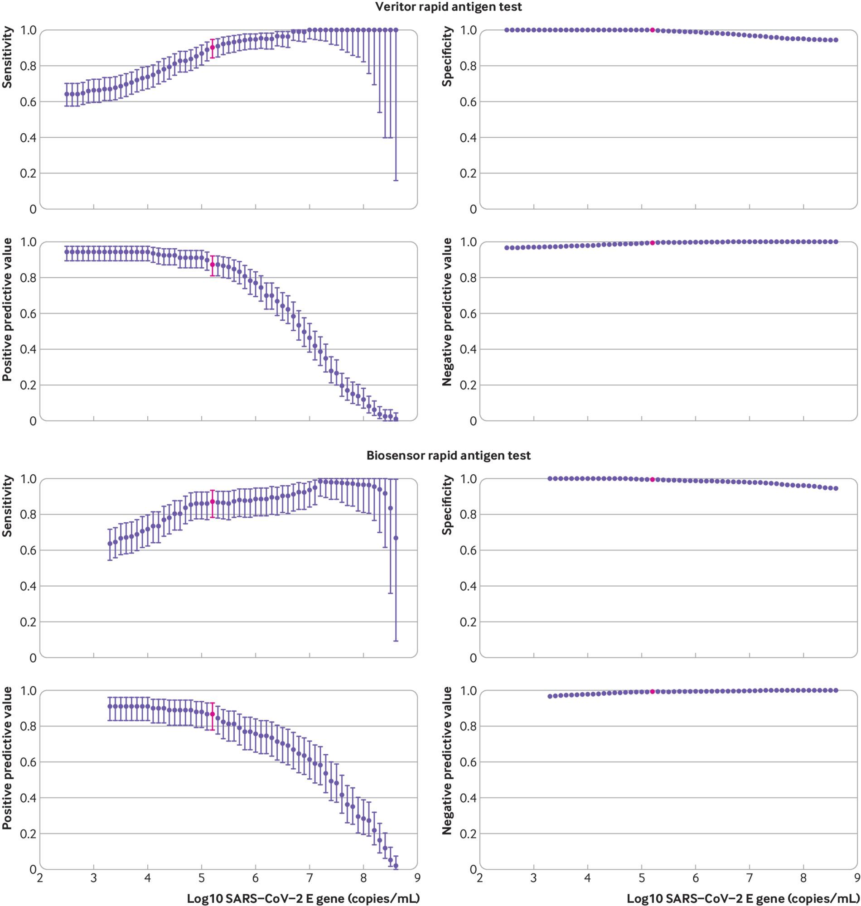
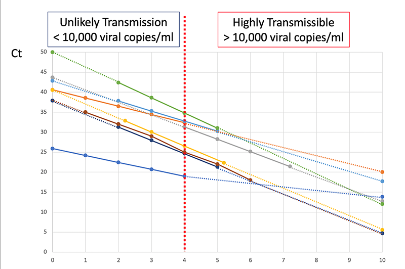
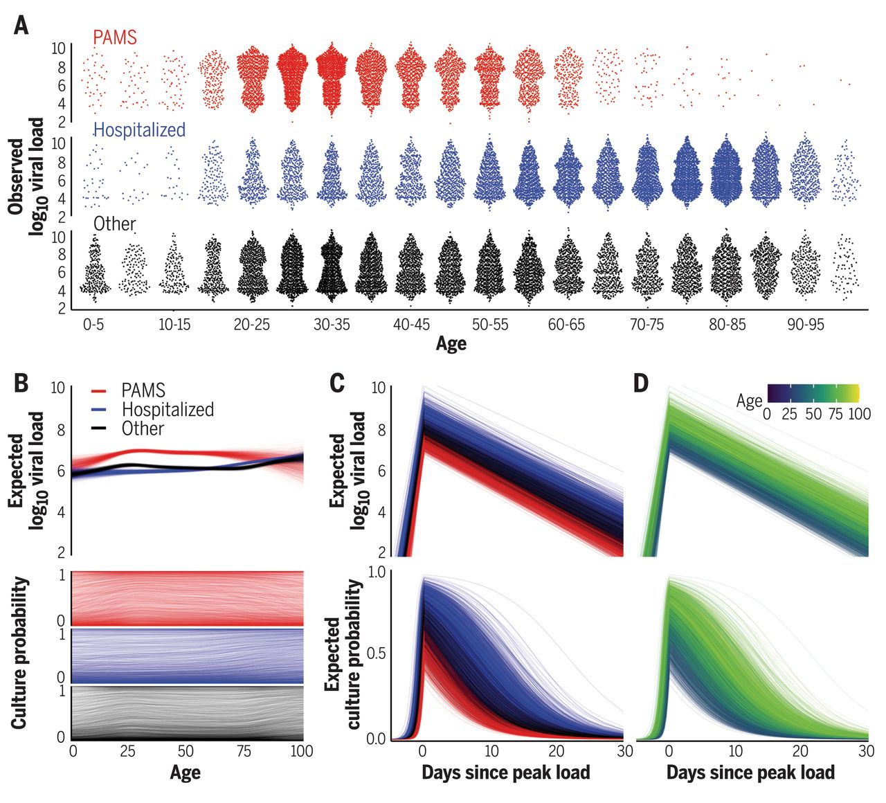

COVID Testing - Sensitivity and Timelines
Sep 7, 2021 10:17 · 1974 words · 10 minute read
COVID Testing - Sensitivity and Timelines
This past week a close contact had a potential COVID exposure, so I wanted to understand a few basic questions about COVID testing to help figure out what is safe and what isn’t. Three questions seem especially relevant:
- How sensitive are PCR and rapid antigen tests?
- If someone tests negative on a rapid antigen test but positive on PCR, should they worry about infecting other people? Is there a ‘safe period’ where they very likely won’t transmit?
- If someone tests negative on PCR (but had an exposure and was in fact infected) should they worry about infecting other people? Again is there a ‘safe period’ where they very likely won’t transmit?
Before diving in, a disclaimer: This is not medical advice, just me trying to figure things out. I am not an epidemiologist, virologist, or medical professional, so take this with a grain of salt and check the references for yourself if uncertain. If you spot errors please let me know so I can correct them!
Transmission Basics
The way COVID spreads from person to person is by a virus (SARS-CoV-2) physically moving from one person’s body to another. At this point it’s pretty well-understood that this transmission happens primarily by the virus moving through the air, that exposure occurs when someone breathes in air that contains the virus, and that the virus gets in the air by someone infected breathing/coughing/sneezing it out.
The details of all of the above are complicated and have a many uncertainties (including e.g. how many viral copies you need to breathe in before you can expect to be infected), but the basic story is solid.
A consequence of this story is that the more virus an infected person sheds when they breathe, the more chances the virus has to infect someone else. The implied model is something like:
- An infected person breathes out $N$ viral copies.
- Each copy has some probability $p_a$ of being breathed in by another person (depending on the setting, airflow, etc.).
- Each copy that is breathed in has some probability $p_i$ of infecting the other person.
- Probability of infection is $p_o=p_i p_a N$.
I don’t want to focus too much on this model. It’s very crude, and likely wrong in all sorts of ways. But it communicates a useful intuition, namely that how many viral copies a person breathes out really matters! And this motivates the concept of viral load. Per Wikipedia:
Viral load, also known as viral burden, is a numerical expression of the quantity of virus in a given volume of fluid, including biological and environmental specimens.
In the case of COVID, viral load is often (but not always!) defined as the number of viral copies per milliliter in a nasal swab or saliva sample, and it’s clear that this is proportional to the number of viral copies a person breathes out. I’ll stick with this measure going forward, and will convert other reported viral loads into these units as needed.
Dependence on Viral Load
Many of the ways that our simple model could be wrong make the viral load matter even more. For instance for symptomatic infection there seems to be a non-linear/thresholding effect, where higher viral loads mean higher odds of symptoms:

This figure shows the probability that someone COVID-positive (PCR) remains symptom-free as a function of time since their exposure (based on contact tracing) and the viral load of the person they were exposed to. So there’s clearly a trend where people are less likely to develop symptoms if they’re exposed to fewer viral copies.
Whether or not there’s an actual thresholding effect on infection, we do see that people who transmit COVID have viral loads 1000 times higher than those who don’t, typically of order $10^9\mathrm{copies/mL}$,(though beware the small sample size and observational study design here). Other transmission studies confirm this trend, but differ on the details, for instance this one finds a much smaller effect, though I’m skeptical that they were really tracing an isolated outbreak given that the data are from March-April of 2020, which should weaken the observed effect size:

This makes sense even in our very simple model: the people with the highest viral load shed the most, and so go on to infect the most other people. Even though it’s not clear that there’s an actual thresholding effect here, going forward I’ll refer to ‘thresholds for infection’ with the notion that for any given risk tolerance you can draw a threshold viral load below which you are not concerned.
Unfortunately, the odds of transmission as a function of viral load seem quite uncertain, and vary a lot between studies. Transmission appears very unlikely below $10^5\mathrm{copies/mL}$:

Above that it depends a lot on which study you believe. By loads of $10^9\mathrm{copies/mL}$ it’s clear that COVID transmits readily, and there’s been lots of work between $10^5-10^9\mathrm{copies/mL}$ attempting to characterize relative risks, with the result that risk decreases with decreasing viral load, though again different studies differ quite a bit on the details.
My rough read here is that at $10^5\mathrm{copies/mL}$ transmission is very unlikely, at $10^7\mathrm{copies/mL}$ transmission is possible but based on the above figure perhaps 3x less likely than at typical ‘peak infectiousness’ (viral loads of $10^{8+}\mathrm{copies/mL}$), and at higher viral loads transmission becomes quite likely.
This suggests a relatively straightforward way to evaluate if someone is at risk of transmitting COVID to others: measure their viral load. The lower the better, and depending on your risk tolerance there will be some threshold viral load below which you stop caring about the risks. Moreover the lower the viral load the less likely any infection is to lead to symptoms, which is also helpful.
Test Sensitivity
The tests available to the general population don’t measure viral load, they just tell you ‘positive’ or ‘negative’. Fortunately we have measurements on how sensitive these tests are:

This shows the measured probability of a positive result for four different tests as a function of viral load. PCR is the most sensitive, with a 50% sensitivity at viral loads of $10^2\mathrm{copies/mL}$ and 90+% sensitivity at loads of $10^3\mathrm{copies/mL}$. Antigen tests are the next most-sensitive, with 50% sensitivity at loads of $10^5\mathrm{copies/mL}$ and around 80% at $10^6\mathrm{copies/mL}$. The other two tests (VeroE6TM and VeroE6) are two ‘viral culture’ tests which (roughly speaking) expose human tissue to the sample in question and see whether or not any virus replicates in it.
This makes it pretty clear that someone who tests negative on PCR is very unlikely to infect others around the time the sample is taken. PCR is sensitive to viral loads a thousand times smaller than any likely infection threshold, so barring questions of poor sample collection a negative PCR test really does mean a person is unlikely to infect others.
Similarly, antigen tests look pretty good. They’re 50% sensitive around the lowest thresholds in the literature for infection ($10^5\mathrm{copies/mL}$) and are around 80% sensitive at $10^6\mathrm{copies/mL}$, which is still much below typical measured viral loads of those who spread COVID in contact tracing studies. Some antigen tests show even better sensitivity, at 90+% by $10^5\mathrm{copies/mL}$:

Other analyses of antigen tests find similar sensitivity curves, though reading some of them is a little challenging because they often measure viral load in ‘Ct’, which is an empirical measure that depends on the specific machine used to measure viral load. ASU has a nice example of calibration curves:

Put another way, if someone tests negative on a rapid antigen test they very likely have a low viral load, most likely below $10^5\mathrm{copies/mL}$, which makes them very unlikely to infect others. And if they test negative on a PCR test the limits are even lower.
The takeaway here is that a negative PCR test is extremely good evidence that a person will not transmit COVID. A negative antigen test is less certain but still quite good evidence.
Timing
Note that none of this accounts for test timing. The test just tells you about whether you could infect others at the time the sample was collected. If the test takes days to come back negative you can’t infer that you were safe the whole time!
Consider the following sequence of events:
- You have an exposure on day 0 and are infected.
- You take a PCR test on day 3 and have a viral load of $10^1\mathrm{copies/mL}$. The test takes time to come back, so you carry on doing things.
- Over days 4 and 5 your viral load grows to $10^7\mathrm{copies/mL}$ and you infect someone else.
- On day 6 your PCR test comes back negative.
In this scenario the PCR test is telling you that on day 3 you were unlikely to transmit, it’s not telling you much at all about the later days.
So an important question is: how long after a negative test is it safe to assume someone can’t transmit the virus? It all depends on how quickly viral load can change. This is something that has been modelled and measured. Below are three example models (B,C,D):

And a few more:

Viral load rises rapidly in the beginning, peaks, and then falls as a person (hopefully) recovers. A negative test on the way ‘down’ from the peak is safe for a long time: the person is recovering, the viral load will only get lower! But what the way ‘up’ to the peak is another story. Viral load typically rose pre-Delta-variant by about 100x/day on the way up.
For the Delta variant things move somewhat faster, but there just isn’t much good data on how much faster. The best estimate I came up with is to look at the time from first exposure to first positive PCR test (testing daily). This seems to have shrunk from ~6 days pre-Delta to ~4 days with Delta based on contact tracing of an outbreak in China. Assuming exponential growth on the way ‘up’ to the peak, that suggests that viral load can rise with Delta by as much as 1000x/day.
Going back to the test sensitivity curves, and assuming the Delta variant, this means that a negative PCR test is good for at least a day longer than a negative antigen test, being sensitive to 1000x smaller viral loads. That gives:
- 24 hours where the viral load is below almost all thresholds of safety ($10^5\mathrm{copies/mL}$)
- 8 more hours (32 total) below $10^6\mathrm{copies/mL}$
- 8 more hours (40 total) below $10^7\mathrm{copies/mL}$
By contrast negative antigen tests don’t provide a long safe window:
- 8 hours where viral load is likely to be under $10^6\mathrm{copies/mL}$
- 8 more hours (16 total) below $10^7\mathrm{copies/mL}$
This all agrees pretty well with a (largely pre-Delta) study comparing viral culture tests with PCR and antigen tests, which found that you can expect PCR to turn positive about a day before antigen tests, and that both are highly sensitive (90+%) by the time viral cultures (VeroE6TM) turn positive, which they use as a proxy for ‘When is viral load high enough to cause infection?’ (though there are considerable uncertainties in that analogy).
Takeaway
- Negative PCR tests likely give at least a day, and more likely 32-40 hours, of safety against transmission.
- Negative antigen tests give more like 8-16 hours depending on how transmission varies with viral load.
- The safety window is from the time the sample was taken! A PCR test that takes 24 hours to come back isn’t any better than a rapid antigen test. A PCR test that takes 48 hours to come back is strictly worse.
So the mantra with rapid antigen tests should really be ‘test early test often’. They’re a great way to limit exposure, and a negative test means a person is unlikely to transmit in the immediate future, but it seems like they really do need to be done frequently to be effective.
Thanks to Katherine McDaniel and Chris Said for helpful comments.